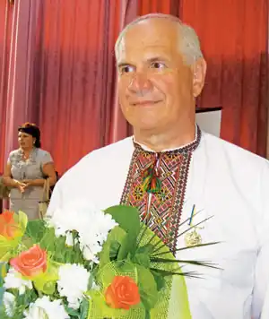

Народився 13 травня 1948 року в селі Борщів Баришівського району Київської області.
Закінчив Київський педагогічний інститут. Працював начальником Управління освіти і науки Бориспільського міськвиконкому. Зараз — проректор та викладач української мови у найбільшому недержавному ВУЗі Міжрегіональній Академії управління персоналом.
Автор книжок: "Березень планети", "Земні турботи", "На межі літа", "Хатнище", "Ронделі", "Трубіж", "Сповідь", "Різдво весни". Лауреат премій імені О. Бойченка та імені А. Малишка. 8 квітня 1991 року "за заслуги в розвитку народної освіти, впровадження нових методів навчання і виховання підростаючого покоління" надано звання "Заслужений працівник народної освіти Української РСР". 2006 року присуджено Київську обласну премію за заслуги в галузі освіти. 1998 року відзначено орденом "За заслуги" третього ступеня.